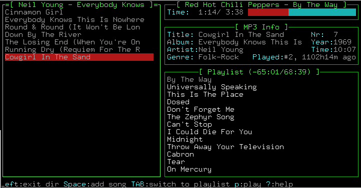

PyTone
Summary
PyTone is a music jukebox written in Python with a curses based GUI. While providing advanced features like crossfading and multiple players, special emphasis is put on ease of use, turning PyTone into an ideal jukebox system for use at parties.
Features
- concise curses based GUI
- simple song selection
- using an arbitrary number of music databases with hierarchical (artist/album/songs, some tags/artist/album/songs) navigation,
- from list of top and last played songs,
- from list of most recently added songs,
- random song list,
- stored playlists, or
- alternatively from file system
- editable playlist:
- deletion
- move song up/down
- delete played songs
- shuffle
- repetition
- automatic addition of random songs, when the playlist is empty
- save to and load from .m3u file
- pluggable players, currently
- internal mp3/Ogg Vorbis player with crossfading and gap killing and/or
- xmms based external player and/or
- mpg321 or (the non-free) mpg123 based external player
- display of information for currently selected song:
- ID3 tag
- length, bitrate, sample rate, BPM, ReplayGain information, part of a compilation, podcast
- times played and skipped
- last played
- song rating (1 to 5 stars)
- plays currently selected song on second player (if your computer has a second sound card or one card with more than one line out)
- search functionality:
- quick search by first letter
- incremental search by regular expression
- random song selection taking into account song rating and time at which song was last played
- description of important key bindings in status bar and context sensitive help
- logging of played songs
- execution of arbitrary command when playback of new song starts
- basic mixer functionality
- customizable key bindings
- customizable look
- English, French, German, Italian and Polish user interface
- external control, e.g. from the shell
- plugin system; currently plugins for the AudioScrobbler service and for displaying the title in the terminal window and using xosd are included
News
- 2007/08/14
- Version 3.0.1 released, which fixes tag filtering and adds virtual directories for all songs which have at least been played once and for focusing on all songs matching approximately (either in title, album or artist name) a given search string. The lyrics display has been enabled now.
- 2007/08/01
- Version 3.0.0 released, celebrating the national holiday of Switzerland, my
adopted country. This major release features a complete rewrite of the database
code, which is now based on SQLite, for improved speed and functionality. A
much more comprehensive subset of song metadata is now stored including song
lyrics, ReplayGain information, skip count, parts of a compilation, disk
number, songs bpm, sample- and bitrate. The tagging of songs and the
corresponding filtering has been introduced.
Upgrade notes: The following config file options have been removed: playlistdir (in the general section), and playlistload (in the keybindings.general section), dbenvdir, basename and the tags_* options (in the database sections). New options are postprocessors (in the database sections), which replaces the tags_* options by allowing to specify a whitespace-separated list of metadata postprocessors, and toggledelete (in the keybindings.filelistwindow) section.
Note that due to lack of resources on my side, there is and will be no converter from the old database format.
Please be aware of the status as 0.0 version - there will almost certainly be a couple of loose ends and bugs - and report any bugs you find! - 2006/08/12
- Version 2.3.1 released. This release contains various bug fixes, in particular for a race condition which sometimes prevented PyTone from starting.
- 2005/09/13
- Version 2.3.0 released. Statistical information about the databases can now be displayed. Nested database queries are now supported. The size of the database request cache can be customized. A C version of the output ring buffer has been added. The play speed can now be changed (thanks to Richard A. Smith for providing the patch). Various bugs have been fixed.
- 2005/06/20
- Version 2.2.4 released. With this release the network functionality has been restored (note that doing so, I've cleaned up the network configuration options a bit, so you may need to update your config files). An AudioScrobbler plugin provided by Nicolas Évrard and plugins for displaying the currently playing song in the X11 terminal title bar and using the xosd program (contributed by Dag Wieers) are now contained in the distribution. It is now possible to display not only the currently selected song in the item info window but alternatively the song currently being played on the players. Various bugs have been fixed.
- 2005/05/09
- Thanks to Dag Wieers, there are now Red Hat/Fedora RPM packages for PyTone and its dependencies.
- 2005/04/27
- Version 2.2.3 released containing bug fixes only.
- 2005/03/16
- Version 2.2.2 released, which adds support for seeking in the song (thanks to Tomas Menzl for providing a patch). The complete contents of the playlist are now being kept after a restart of PyTone. When for a given artist only songs from a single album are registered, PyTone can now optionally skip the album selection directory. Directly jumping to the album of the currently selected song in the playlist window has been implemented. Changes to the database are now better reflected in the database view. Database checkpointing works again. A couple of other bugs have been fixed.
- 2005/02/07
- Version 2.2.1 released, which fixes a regression in the metadata scanning code. More debugging output has been added. Services are now automatically restarted when an exception occurs. More checks for the database configuration options have been added. A problem with the caching layer has been fixed.
- 2005/02/01
- Version 2.2.0 released, which adds support for more than two databases and a virtual database, which contains the songs from all databases. A database caching layer was added for improved performance. Thanks to a prototype by Nicolas Évrard, PyTone's functionality can now be extended by plugins. A coupled of minor bugs have been fixed.
- 2004/11/29
- Version 2.1.3 released, which fixes a couple of bugs in the playlist and database code. Support for the latest pyxmms module and a French translation of the UI (many thanks to Nicolas Évrard) have been added.
- 2004/11/08
- Version 2.1.2 released, which fixes some bugs introduced in the last version. Furthermore, unneeded log files are now also removed if the bsddb version doesn't support automatic removal. Many thanks to Toma¸ Ficko who for the changes contained in this release.
- 2004/11/07
- Version 2.1.1 released, which mainly contains bugfixes for various issues. A window which shows more detailed information about the currently selected item has been added.
- 2004/08/03
- Version 2.1.0 released. This release contains mostly user requests: Filtering songs by their rating is now possible. One of the most often requested features, namely going back one song in the play list finally has been implemented. Various configuration options now allow the user to customise id3 tag transformations. The step size used when changing the volume can be configure now. Incremental searching and repetition of the last search have been implemented. A song is now considered as not having been played if its playback has been aborted very early (currently during the first 10 seconds). An arbitrary shell command can be automatically executed when the playback of a new song starts. The scheduled starting time of a song can be displayed in the playlist. A coupled of bugs have been fixed.
- 2004/07/22
- Version 2.0.14 released, which contains numerous bug fixes. A polish translation of the UI is now included (many thanks to Krzysztof Zych). Support for the eyeD3 id3 parsing module has been added. The database code now makes use of the transactional capabilities provided by the Sleepycat bsddb. Searching by regular expression is now possible.
- 2004/06/13
- Version 2.0.13 released, which adds support for remote querying information about the currently being played song. Saving of the song databases in a single file is now possible. A couple of minor bugs have been fixed.
- 2004/04/17
- Version 2.0.12 released, which allows the user to customize the window layout, adds an improved song length detection and fixes the crossfader.
- 2004/04/04
- Version 2.0.11 released, which contains a new database layout that allows merging of all albums with the same name in the albums list. Passing arbitrary options to the ao library is now possible. A race condition of the database rebuild thread was fixed.
- 2004/03/17
- Version 2.0.10 released, which fixes a couple of bugs, adds a message log window to PyTone and allows the user to specify the size of the audio buffer used by the ALSA driver. Some files which erroneously have been missing in the last distribution are now included. When stopping the player, the currently playing song is marked as unplayed again.
- 2004/03/17
- The PyTone users mailing list moved to the LUGA server. See this page for more info.
- 2004/02/15
- Version 2.0.9 released, which adds support for transparent terminals, allows the user to turn of the cross fading of songs and improves the usability when using Braille displays. An endian issue on the PowerPC platform and the reencoding of unicode strings in Ogg Vorbis tags were fixed. PyTone is now more verbose when encountering errors during startup. When updating the song database, songs which are no longer accessible are deleted automatically.
- 2004/01/18
- Version 2.0.8 released, which fixes a crash occurring during the
first PyTone startup. Furthermore, the ID3 information of the selected
song(s) can now be rescanned and Davide Alessio has translated the
PyTone UI into Italian.
- 2004/01/05
- Version 2.0.7 released, which allows to set the database cache size when using Python 2.3 and above, updates the ID3 parsing module, and adds a toggle pause function to the command line control program. Furthermore, a couple of bugs have been fixed.
- 2003/12/12
- Version 2.0.6 released, which adds support for an external control of PyTone from the command line and allows to write to a file information about the song currently being played on the main player.
- 2003/12/08
- Thanks to Han Boetes, there is now a PyTone RPM for Mandrake Linux. Instructions how to build it, can be found here.
- 2003/11/27
- Version 2.0.5 released, which contains some fixes for bugs introduced in the last version.
- 2003/11/25
- Version 2.0.4 released, which, apart from minor bug fixes, contains support for playlist repetition and automatic selection of a random song, when no more songs are present in the playlist.
- 2003/10/18
- Version 2.0.3 released, which contains a couple of bug fixes and small improvements, amongst others, for monochrome terminals and for running PyTone over slow serial lines.
- 2003/10/14
- Thanks to the packaging work of Alexander Wirt, PyTone is now available part of the Debian distribution. See the PyTone package page for more information.
- 2003/07/27
- Version 2.0.2 released, featuring further fixes for small bugs and some code cleanups.
- 2003/07/25
- Version 2.0.1 released, containing fixes for playlist save and load bugs (thanks to Alexander Wirt for reporting this bugs) and for a small bug in the path expansion of the user config file (thanks to David Braaten). Furthermore, monochromatic terminals are supported again. A command-line switch for rebuilding the song databases has been added.
- 2003/07/24
- If you experience Python segfaults when using the internal player, please upgrade your pyao module to version 0.82, which fixes a couple of bugs. Furthermore, I'll release a 2.0.1 version the next days, which basically contains fixes for various reported bugs.
- 2003/07/18
- Version 2.0.0 released. Besides a huge code reorganisation, many
new features are included: A new config file format, list of songs and
albums, show most recently played songs, first steps towards a network
functionality, currently played song is highlighted in playlist (thanks
to Iñigo Serna), support ossaudiodev contained in Python 2.3, support
for transparent background (needs a patched Python curses module). Many
bugfixes, including an oft-reported crash with certain id3 tags
containing \0 characters. Note that the network functionality is not
yet complete now. In particular, user authentication is not supported yet,
so use this only one a trusted network.
Note that you cannot upgrade your database from old 1.x version of PyTone.
Finally note, that this is a .0 version, so don't be surprised if not everything works as expected -- I'm open for bug reports... - 2003/04/12
- Version 1.12.2 released, fixing a small bug preventing PyTone to run on Python 2.1.x.
- 2003/04/06
- Version 1.12.1 released. This release features player pause,
immediate song play and playlist shuffle. PyTone is now more verbose
on some common configuration errors. The contents of the playlist can
now be saved (and subsequently restored) upon a crash of PyTone.
Note that some new options have been added to the configuration file config.py. Please use the new one provided with this release. - 2003/02/06
- Version 1.12.0 released. Lots of bug fixes. Ogg Vorbis support was
added (many thanks to Byron Ellacott for the patch). Configuration of
scrolling behaviour, playlist location, position of virtual folders,
etc. is now possible.
Note that you have to upgrade your database, if you upgrade from PyTone 1.11.x via$ python updatedb.py
- 2003/01/21
- Version 1.11.0 released. Major bug fixes (special thanks to Damjan
Georgeivski for pointing out a problem with the internal player which
prevented playing with some sound drivers) and code rework. The
database should not crash on exit anymore. Manual generation of the
database is now supported, as well. New features include id3v2
support, song rating, sorting by decades, new random recursive insert
command, which takes into account the song rating.
Note that you have to delete your old database, if you upgrade from PyTone 1.10.x or older. Sorry for this inconvenience. Furthermore, some new options have been added to the configuration file config.py. Please use the new one provided with this release. Note also that the r key is now used for the random song insertion function. - 2002/12/21
- Version 1.10.0 released. There are now lists of the last and most often played songs. Sorting by genre has been implemented. The filesystem view has been integrated in the normal database view. Playlists are catalogued in the database, as well. Support for terminal resizing was added. Instead of crossfading two successive songs on the same album, only kill the gap between them. Major code rework. Note that you have to delete your old database, if you upgrade from PyTone 1.9.x. Furthermore, some options in the configuration file config.py have changed, so please use the new one provided with this release.
- 2002/11/30
- Version 1.9.7 released. Mouse support was added. Furthermore, the look of PyTone can now be customized easily; a colored theme is provided as an example. Localization via GNU gettext is now also possible. The first and at the moment only supported language is German. A lot of bugs have been fixed in this release.
- 2002/10/27
- Version 1.9.6 released. Implemented help window and basic mixer functionality. Performance optimizations and bug fixes in various areas.
- 2002/09/22
- Version 1.9.5 released. All players and the automatic song registering are now running as separate threads. As a result, idle CPU usage is drastically reduced. Various bug fixes in all parts of the program.
- 2002/09/05
- Version 1.9.4 released featuring simplified build process, customizable key bindings, automatic start of playing and of course bug fixes.
- 2002/08/28
- Version 1.9.3 released. First official release.
Screenshot
This is how PyTone 1.9.7 looks in action on a 80x25 terminal:

Software prerequisites
- Python 2.5 (available from here, older version may work, too).
- for the mad based internal player (optional):
- Python header files,
- pymad (available from here),
- pyvorbis (optional, available from here),
- pyao (available from here, please use version 0.82 or above) or the new Python OSS module in Python 2.3.
- libao header files (available from here, if you want to compile the C version of the output ring-buffer.
- for the xmms based external player (optional):
- for the mpg321 or mpg123 based external player (optional):
- for the mixer interface (optional):
- Python OSS module (included in Python 2.3, otherwise available from here)
Download
The latest released version of PyTone can be downloaded as gzipped tar archive from here. The previous versions can still be found here.
Development
The latest development version of PyTone can be found in the Subversion repository. Patches are prefered to be against the latest SVN version.
Installation
If you want to use the internal libmad based player, you have to build one C extension module located in the pcm subdirectory. This can be done simply via
$ python setup.py build_ext -i
Note that by default this builds also a C extension module for the output ring-buffer, which requires the libao header files (see above). If you are happy with the Python version of the output buffer, you can disable building the C module by setting buildbufferedaoext = False at the top of the setup.py file before running the above command.
To enable support for transparent terminals (only needed for Python 2.3.x) set buildcursext = True at the top of the setup.py file before running the above command.
Configuration
All configuration options of PyTone can be found in the sample configuration file conf/pytonerc. Side-wide configuration goes into /etc/pytonerc, user specific changes can be put into ~/.pytone/pytonerc. Note that you only have to supply options you want to change. Furthermore, while most of the standard settings will probably fit your needs, you have to change the variable musicbasedir in the section [database.main] of the main database, which specifies the root of your primary MP3 collection. A minimal version of your configuration file should thus contain
# minimal ~/.pytone/pytonerc defining the root of your music collection [database.main] musicbasedir=/root/of/your/music/collection
Usage
After having adjusted the basic configuration variables to your personal needs, just start the program with
$ ./pytone
and look how the database is being rebuilt. The key bindings described below should say all about the use of PyTone. A list of command line options can be obtained by
$ ./pytone --help
Then let it rock...
Key bindings
| ArrowUp/k | move selection up |
| ArrowDown/j | move selection down |
| PageUp/CTRL-P | move selection one page up |
| PageDown/CTRL-N | move selection one page down |
| Home/CTRL-A | move selection to beginning |
| End/CTRL-E | move selection to end |
| ArrowRight/Enter/Space/l | enter directory / add song |
| ArrowLeft/h | exit directory |
| i/ALT+ArrowRight | add song or directory (recursively) |
| r | insert random selection of selected directory (including subdirs) |
| ALT+Enter | immediately play song |
| u | update ID3 information for song/directory |
| D | delete / undelete currently selected song/directory |
| TAB | switch to playlist window |
| ALT+<character> | Quick search: jump to next entry that begins with character |
| CTRL-S// | Search in list |
| f | Focus on songs matching approximately a search string |
| ArrowUp/k | move selection up |
| ArrowDown/j | move selection down |
| PageUp/CTRL-P | move selection one page up |
| PageDown/CTRL-N | move selection one page down |
| Home/CTRL-A | move selection to beginning |
| End/CTRL-E | move selection to end |
| + | move selected song up |
| - | move selected song down |
| d | delete selected song |
| ALT+Enter | immediately play song |
| r | shuffle playlist |
| u | update ID3 information for song |
| TAB/ArrowLeft/ArrowRight/h | switch to database/filelist window |
| ArrowRight/l | jump to currently selected song in filelist window |
| p | start/pause playing |
| S | stop playing |
| n | advance to next song in playlist |
| b | go back to previous song in playlist |
| > | fast forward in song |
| < | rewind in song |
| BACKSPACE | delete played songs |
| CTRL-D | clear playlist |
| CTRL-U | mark all songs in playlist unplayed |
| CTRL-T | toggle playlist mode (no repeat, repeat, or random song) |
| CTRL-W | save playlist to file |
| CTRL-R | load playlist from file |
| ( | decrease output volume |
| ) | increase output volume |
| { | decrease playback speed |
| } | increase playback speed |
| ~ | reset playback speed to normal |
| 1 - 5 | change rating of selected item |
| ALT-1 - ALT-5 | change rating of currently played song |
| ? | show help |
| ! | show message log |
| % | show statistical information about database(s) |
| = | show information about selected item |
| L | show lyrics of selected song |
| CTRL-V | toggle information shown in item info window |
| F10 | toggle UI layout (one/two column) |
| CTRL-X CTRL-X | exit program (the keypresses have to be maximally one tenth of a second apart) |
Mailing list
For discussions on PyTone, a mailing list has been created. For more information on subscribing and for the list archive, see here.
History
PyTone was written since my favourite MP3 Jukebox (KJukebox) wasn't maintained anymore. Its simple user interface and good usability even without a mouse combined with the crossfading ability of the player, have not been reached by any other free program. Especially for the use at a party, KJukebox was very well suited.
However, after looking around on the net for sometime, I found mjs, a curses based MP3 Jukebox system, which featured a really simple and efficient GUI. Unfortunately, it was written in C and already the first attempts to tailor it to my needs showed that probably a Python version of this program would be a great win. That's how the development of PyTone started...
After one week of intensive programming version 1.0 of what was then called pyjuke was ready and was deployed during a three day long party. It proved to be very usable (even on a 38400 baud serial terminal) and astoundingly stable, even under extreme, Woodstock like conditions (very heavy rain + deep mud :-) )
Subsequently, the internal mad based player was written, which provides crossfading capabilities without using xmms, a new, more imaginative name was found (kudos to Harry!) and PyTone was released.
Copyright and author
PyTone was written by Jörg Lehmann and is free software licensed under the GNU GPL Version 2.
Please send comments, wishes, bug reports and patches to the mailing list or directly to me. Of course, I always like to hear of happy users of PyTone.